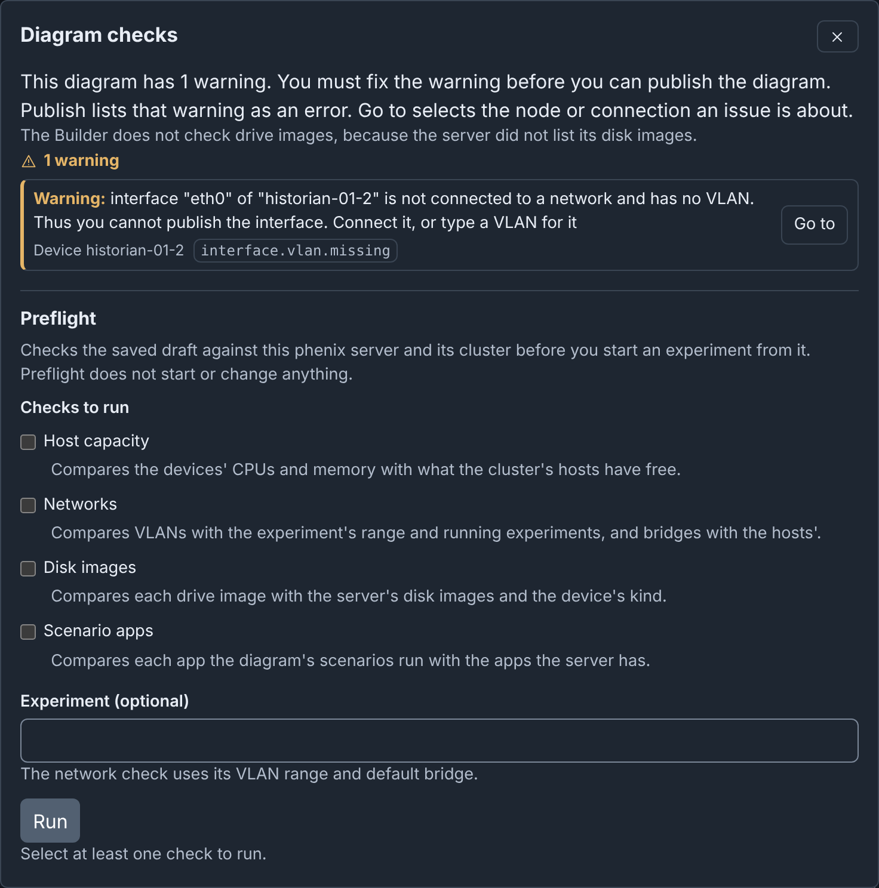
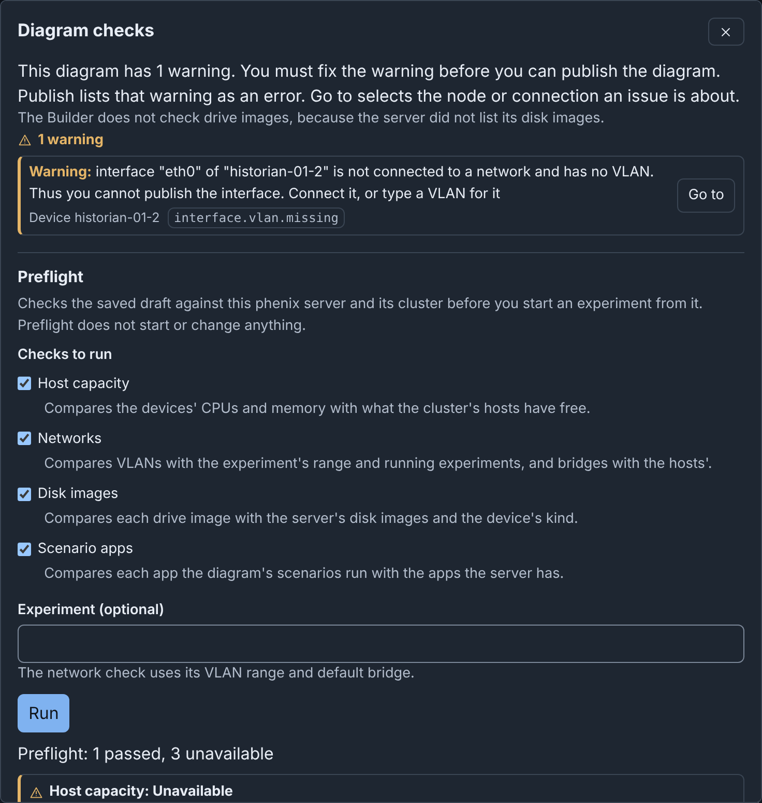

Checks and Preflight: details¶
Info
This page holds every rule, limit and message of this feature. For the short guide, see The Editor.
Checks and warnings¶
Builder checks the diagram while you edit it. The checks button in the header shows the result: No issues, or a count such as 3 warnings.

To fix an issue:
- Click the checks button. The Diagram checks dialog lists the errors, then the warnings.
- Click Go to beside the issue. The canvas selects its node, and the Inspector shows it.
- Fix the field. In the Inspector, Go to beside an issue moves focus to its field.
Some issues also have Fix (see Fixing an issue in one step).
Go to shows a hidden Inspector and moves the view to the node. An issue about a network goes to its switch. An issue that names no field moves focus to its node or connection. An issue about the full diagram, or about a network with no switch, has no Go to.
There are two levels:
- Errors, such as an empty required field. You cannot publish until you fix them.
- Warnings. Some warnings block Publish, which lists them as errors (see What blocks publishing). The dialog says so. Other warnings, such as a device with no interfaces, do not block publishing.
For the full list of codes, see Codes.
The canvas marks each node and connection with an issue: a cross for an error, or a triangle for only warnings. Screen readers read the issues as the description of the item.
Devices from included topologies get no warnings, because they belong to their own topology. But a hostname that an included device also uses is an error, and an address that it also uses is a warning.
When the server lists no disk images, the dialog says "The Builder does not check drive images, because the server did not list its disk images." Otherwise, a drive image that the server does not have is a warning.
Rulesets and addresses¶
phenix accepts these settings, but they do not work as the diagram shows them. None of these warnings blocks publishing. Publish and the Topology YAML download also list them.
| Warning | Code | Go to opens |
|---|---|---|
A device that is not a Router or a Firewall has firewall rulesets, or an interface that names one. The vrouter app ignores them. |
device.rulesets.ignored |
The Type of the device |
An Inbound ruleset or Outbound ruleset of an interface names no ruleset of its device. The vrouter app then applies no firewall to that interface. |
interface.ruleset.unknown |
The ruleset field |
| The address of an interface is not a host address of the subnet of its network. | interface.ip.outside-subnet |
The Address |
| No interface on a network has the gateway address of the network. Interfaces of external devices and of included topologies count. | network.gateway.unowned |
The Gateway of the network |
| The subnets of two networks overlap. | network.subnet.overlap |
The Subnet of the network |
Overlapping subnets are a problem only when the networks connect, for example through a router. Isolated enclaves that reuse a subnet on purpose can ignore this warning.
Device settings¶
phenix apps do not apply these device settings as the diagram shows them. The Inspector shows the same warnings at the field. Publish and the Topology YAML download also list them. Three of them block publishing (see What blocks publishing).
These devices get fewer warnings:
- Devices from included topologies and external devices get none of these
warnings. phenix still reads the
ntp-serverlabel of an external device. - phenix apps do not configure a device whose
phenix/default-appsannotation isfalse. It gets no warning about its OS type, interfaces, OSPF orvrouter/enable-ssh. - That device still gets the warnings about no drive, file injections,
phenix/startup-autotunneland thentp-serverlabel.
| Warning | Code | Go to opens |
|---|---|---|
| A device has no drive under Drives. phenix needs a drive to start it. This blocks publishing. | device.drives.none |
Add drive under Drives |
A Router or Firewall has an OS type other than vyatta, vyos or minirouter. phenix does not configure its routing or firewall. phenix still configures linux as Vyatta, but this is deprecated. |
device.router-os.unsupported |
OS type |
A device that is not a Router or Firewall has static interfaces. Its OS type is not linux, rhel, centos or windows, for example other. phenix writes no interface configuration for it. |
device.interfaces.unconfigured |
OS type |
A device has serial interfaces, but its OS type is not exactly linux. phenix sets serial interfaces only on linux. |
device.serial.unconfigured |
OS type |
| A device has file injections or deletions, but Snapshot is off, or the Inject partition of its first drive is 0. phenix does not inject or delete its files. | device.injections.unapplied |
Snapshot, or the Inject partition of the drive |
A Vyatta or VyOS router (OS type vyatta, vyos or linux) has an interface with protocol ospf, but no network.ospf. The experiment does not start. This blocks publishing. |
device.ospf.missing |
The Protocol of the interface |
An ospf interface of a minirouter has an address in no area network of its network.ospf, or the device has no network.ospf. The interface is in no OSPF area. |
interface.ospf.outside-area |
The Address of the interface |
An area network of a minirouter holds the address of none of its ospf interfaces. minirouter does not advertise it. |
device.ospf-network.unused |
The area network |
A minirouter has network.ospf, but no interface with protocol ospf. |
device.ospf.unused |
network.ospf |
The ntp-server label names no interface of its device, or an interface with no IP address. The experiment does not start. This blocks publishing. |
device.ntp-server.invalid |
The value of the label |
More than one device has the ntp-server label. phenix uses only the first device with it, in the order of the diagram. |
device.ntp-server.ignored |
The value of the label |
The diagram has Vyatta or VyOS routers, and the ntp-server device has no interface on VLAN mgmt, in any case. The routers get no NTP server, unless an ntp app of the scenario names one. |
device.ntp-server.no-mgmt |
The value of the label |
The vrouter/enable-ssh annotation of a Vyatta or VyOS router is not an IP address or the name of an interface with an IP address. phenix does not enable SSH. phenix reads this annotation on no other device. |
device.enable-ssh.invalid |
The value of the annotation |
An entry of the phenix/startup-autotunnel annotation is not "port", "port:dport" or "port:host:dport", with ports from 1 to 65535. A dport of VNC, in any case, permits an empty host. phenix skips each bad entry. phenix opens no tunnel when the value is not a list of texts. |
device.autotunnel.invalid |
The value of the annotation |
The phenix/default-apps annotation is not true or false, for example the text "false". phenix runs its default apps. |
device.default-apps.invalid |
The value of the annotation |
phenix finds an interface by name in any case: ETH0 names eth0. In the
Inspector, the values of the ntp-server label and the vrouter/enable-ssh
annotation suggest the interface names of the device.
Fixing an issue in one step¶
Some issues have a Fix button, which says what it does, for example "Fix: Rename web-01 to web-01-2". The dialog stays open, and focus moves to the next issue. Undo reverts each fix as one step.
| Issue | Code | What Fix does |
|---|---|---|
| Two devices have the same hostname | node.hostname.duplicate |
Renames the device to the next free hostname, such as web-01-2. When the other device is from an included topology, Fix renames the device of this diagram. |
| Interfaces on one network use the same IP address | interface.ip.shared |
Gives the interface the first free address of the subnet, as Assign addresses does, with the same gateway rules. |
| Interfaces on one network use the same MAC address | interface.mac.shared |
Clears the MAC address of the interface. phenix then makes one when the experiment starts. |
There is no Fix in these cases:
- The draft is read only.
- The device is from an included topology, which must fix it.
- For an IP address: the interface is on no network, its network has no subnet, or the subnet has no free address. Set a Subnet for the network, or type a new address in the Inspector.
- For a router interface with the gateway address: the router keeps the gateway. When several routers have the gateway, the first router keeps it. Fix gives each other router a free address.
Preflight¶
The Preflight section of Diagram checks asks the phenix server to check the saved draft against the server and its cluster. The checks write nothing and start no VM or experiment. This browser keeps the checks that you ticked last until you log out.
| Check | What it compares |
|---|---|
| Host capacity | The hardware.vcpus and hardware.memory of each device that is not external, against the free resources of the schedulable cluster hosts. Unset values count as 1 vCPU and 512 MB. Each device must fit on one host. A device that fits on no host fails the check. Too little free memory fails it. Too few free CPUs is a warning, because VMs can share CPUs. |
| Networks | The VLANs of the devices and the VLAN aliases of the networks, against the VLAN range of the experiment that you name. No range applies without an experiment, or when the experiment sets none. The aliases, against the VLANs of the running experiments that your role may list. The summary says when it left out experiments that your role may not list, but it does not name them. The bridges of the interfaces and the default bridge of the experiment (phenix without an experiment), against the bridges of the schedulable hosts. A missing bridge is a warning, because minimega creates it when the experiment starts. |
| Disk images | Each drive image, by file name, against the disk images of the server. The kind must agree: a VM or ISO image for a kvm device, a container image for a container. The server keeps its list of disk images for 10 seconds, so it may not find a new image yet. |
| Scenario apps | Each app that the scenarios of the diagram run, against the default apps, the built-in apps and the user apps on the PATH of the server. Disabled apps do not count. |
To run Preflight:
- Click the checks button in the header.
- Under Preflight, tick the checks.
- Optional: in Experiment (optional), type the name of the experiment.
- Click Run. Builder first saves your latest changes.
The report gives a total, for example "Preflight: 3 passed, 1 unavailable". Each check shows Passed, Failed or Unavailable, and a summary. Each issue has its code. An issue about a device or a network has Go to.

A check is Unavailable when Builder could not do all of it. An issue gives one of these causes:
- Your role does not have the permission that the check needs (see Administration).
- Builder cannot connect to minimega.
- The server lists no disk images, or does not list them within 10 seconds.
- The check took longer than 20 seconds.
Builder still does the other checks. The report stays until the diagram changes.